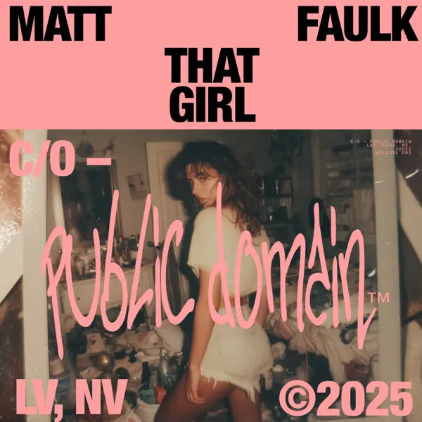

Tech house is my ultimate go-to when I really want to lock in. Those tight, hypnotic beats and smooth drops just click with my brain, making long study sessions feel effortless. It keeps my energy up without being overwhelming, and somehow it makes focusing feel almost fun. Whenever I turn on some tech house, I get into this steady rhythm, almost like the music guides me into productivity. If I had to pick one genre to listen to while working, it would always be tech house. What's great about tech house is its versatility. I can use it for writing essays, tackling projects, or even cleaning my workspace, and it works every time. The repeated, layered patterns train my mind to stay attentive, and the subtle changes in the mixes keep things interesting without pulling me out of focus. I often find myself syncing my movements to the beat, tapping a foot or nodding along, which makes long stretches of work feel active instead of passive. Even when I hit a mental block, a good tech house track can help me push past it, almost like it's keeping my concentration on track.
Unlike deeper or more melodic genres, tech house has this sense of forward motion. It energizes without shouting. It's precise, rhythmic, and motivating, making it the perfect companion for anyone who wants music that supports focus while keeping the session dynamic. Every playlist I create feels like a map for the work ahead, and once I'm in that flow, I rarely want to stop. For me, tech house is more than music; it's a way to get into the zone and actually enjoy being there. The more I listen, the more I notice small details in the tracks like percussion patterns, faint synth layers, or vocal samples that are tucked into the mix. These little elements keep my brain engaged and make even long study sessions feel interesting. I can leave a playlist running for hours, and by the end, I often realize I've accomplished more than I expected without feeling drained. Tech house has this incredible balance of consistency and variety. It's steady enough to help me focus but always evolving just enough to stay fresh. Every time I press play, it's like stepping into a rhythm that encourages productivity, creativity, and energy all at once.
'Smack Yo' is full of tight percussion and vocal chops that keep the energy flowing without being distracting. I can have it on while working or brainstorming, and it keeps me moving through tasks. 10/10, perfect for keeping focus with a little rhythmic push.

The rolling bass line and subtle melodies of "That Girl" make it easy to stay in the zone. It's energetic but controlled, so it keeps me engaged without pulling my attention from studying. 9/10, a track that drives productivity.
Seduction has a hypnotic, pulsing groove that's great for background focus. It's slightly less dynamic than the others, but still solid for keeping energy steady while I work. Solid track, 9/10 it's strong and I have great memories attached to it!